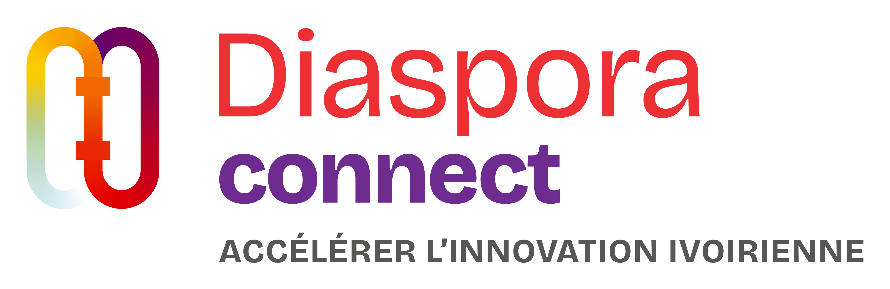

Les opportunités d'emploi du marché ivoirien, rassemblées et classées par pertinence pour les talents de la diaspora. Chaque offre renvoie au lien officiel pour postuler.
Les étoiles (★) notent la pertinence d'une offre pour un talent de la diaspora, pas la qualité de l'employeur. La note combine : le niveau de séniorité (les postes qualifiés et cadres montent) et le secteur (Tech, Finance, RH, Juridique, Ingénierie, ONG sont priorisés ; les postes peu qualifiés sont à 1★).
Les niveaux correspondent à l'expérience attendue : Stage (stage / alternance) · Junior (0–2 ans) · Confirmé (3–5 ans) · Senior (6–10 ans) · Manager / Direction (encadrement, 10+ ans).